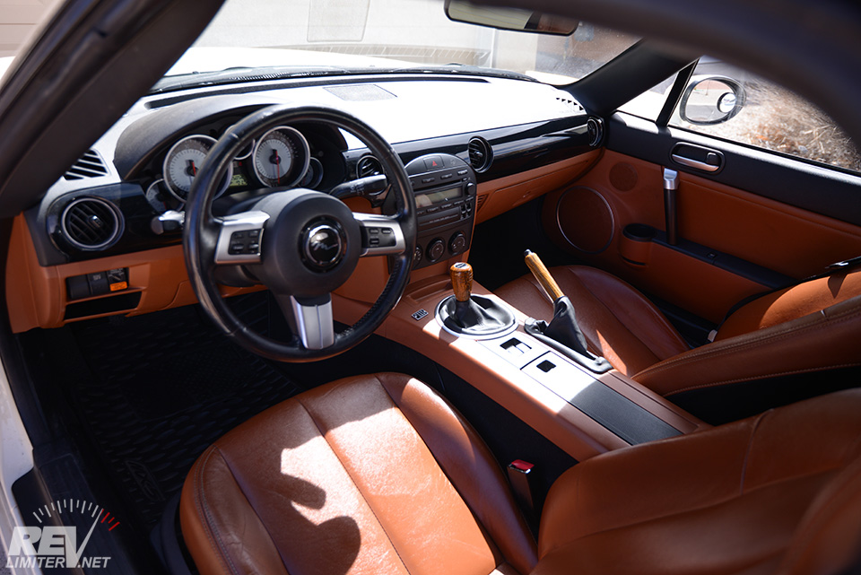
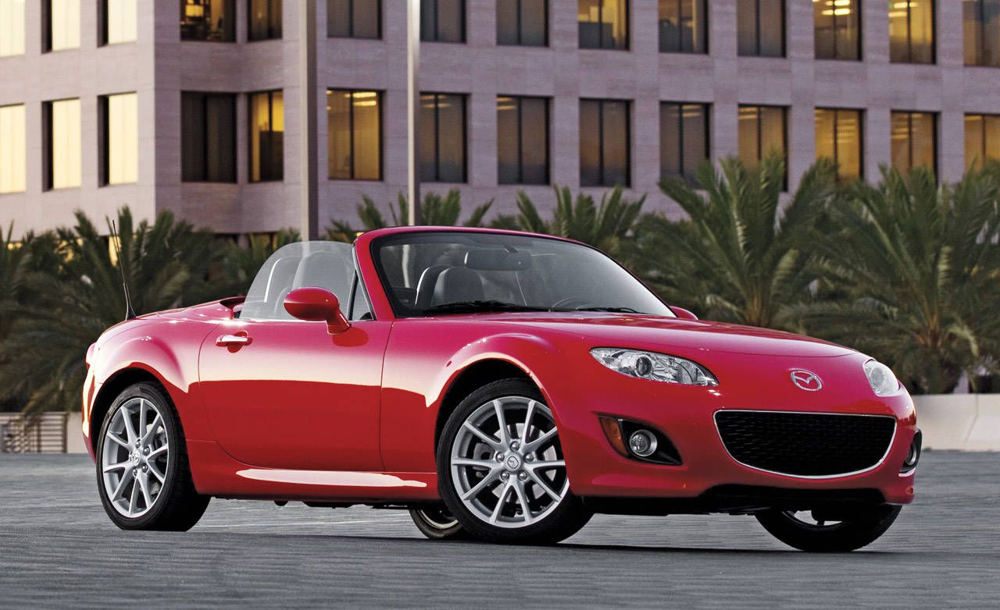
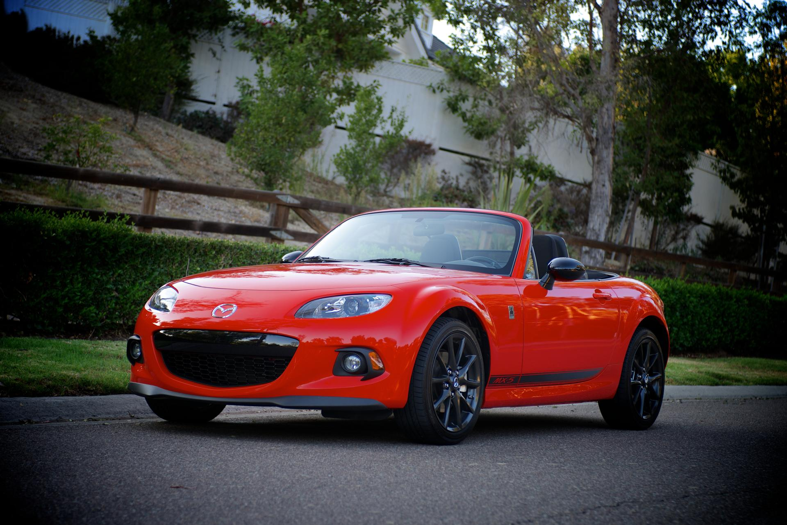
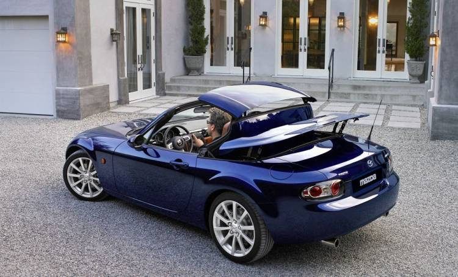
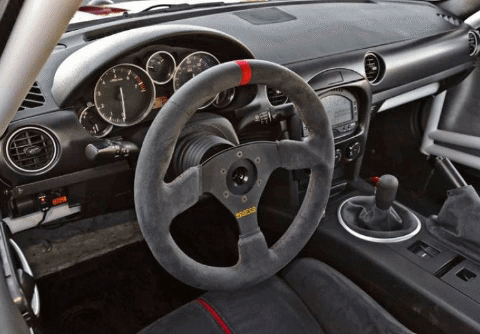

MAZDATA
NC (2005-2015)
El MX-5 NC (También conocido como MK3) salio a la venta en 2005.
Motorizaciones:
1.8L 126cv
2.0L 160cv
Versiones:
NC1
(2005-2009)
NC2
(2009-2013)
NC3
(2013-2015)
Llegamos a la tercera generación, al actual (por poco tiempo) Miata. Una tercera generación donde se produjo un considerable salto generacional , sobre todo si tenemos en cuenta el tímido paso entre el Na y el Nb. Gana dimensiones, gana presencia, los pasos de rueda se convierten en uno de los puntos más destacados de su diseño y se mantienen lazos en elementos como el paragolpes delantero o la zaga.
Su interior en cambio parece dispuesto a volver a la primera generación. De las curvas de las últimas unidades del Na y del Nb a un salpicadero recto con una línea frontal que inevitablemente nos recuerda al Na.

La sencillez, tanto de su exterior como de su habitáculo y su mecánica sigue siendo su gran baza.
Bajo el capó del Nc nos encontramos con una mecánica 1.8 de 126 caballos y un 2.0 de 160 caballos, en ambos casos atmosférico y de 4 cilindros, siendo su par de 167 y 190 Nm respectivamente.
En 2008 esta alternativa recibió un lavado de cara en el que se introducían nuevos paragolpes, nuevas ópticas y ponían a punto las suspensiones, mejorando además el tacto del cambio, contando también en Europa desde entonces con una alternativa automática.

En 2013 se volvía a aplicar una nueva actualización, en esta ocasión con cambios mucho menores. Se mejoraba la frenada y se introducía una respuesta más precisa del acelerador, pequeños matices estéticos en su frontal y un capó activo listo para ofrecer una mayor protección a los peatones en caso de atropello.

En esta generación se introduce junto a la capota de lona clásica una variante de techo duro retráctil, de mecanismo automático, que recibe la denominación de Roadster Coupé, RC.
Coloquialmente, el MX-5 original es "techolona" y el RC es "techolata".

En esta generación merece la pena destacar versiones como el Mazda MX-5 Super25, con jaula antivuelco, faros de competición sobre el capó, un interior aligerado, un volante de competición y el asiento tipo backet, llantas Volk y cambios en la ECU y sistema de escape; el MX-5 GT, con 205 caballos, escape central, un alerón tipo lip en la zaga y un splitter frontal o el MX-5 Yusho, equipado con un compresor, consiguiendo una potencia de 241 caballos.
